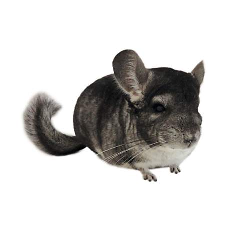

My name is Zack Pincince and I am 18 year old. I was born in New Haven, Connecticut but I have moved around a lot. I have lived in Massachusetts, Pennsylvania, Rhode Island, Connecticut, and North Carolina. I move around bcause my dad is a college football coach so we have to move where ever his job is. There are pros and cons to moving but I ahve become pretty good at it. I have two siblings, Owen and Emma, who are both younger than me. I currently live in North Haven, CT with them, my mom and dad, and my dog and chinchilla.
